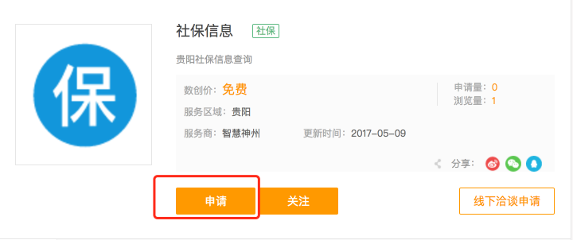
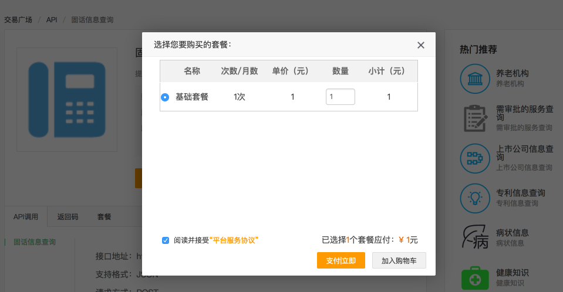
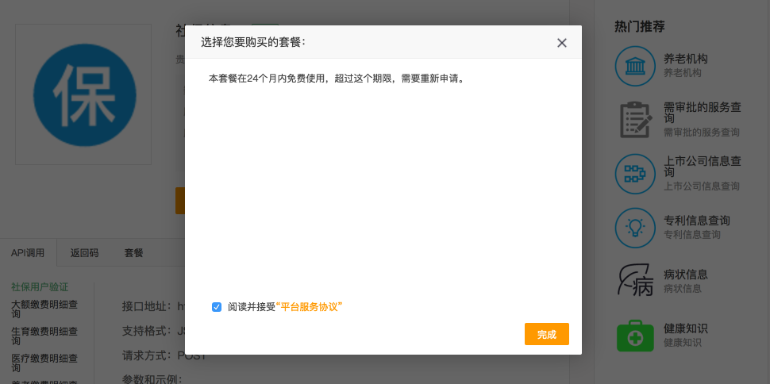
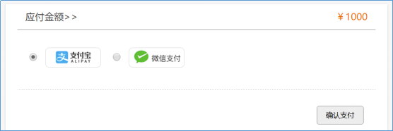
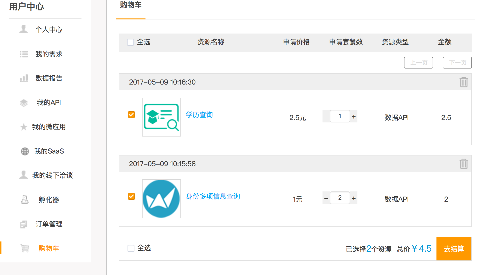
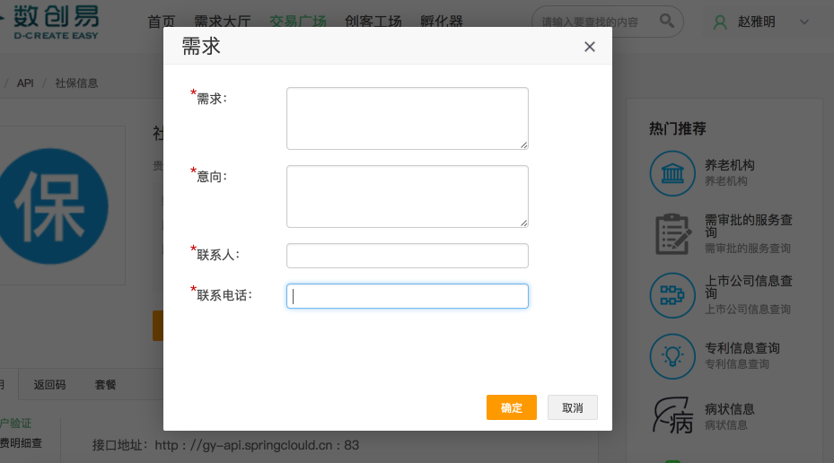
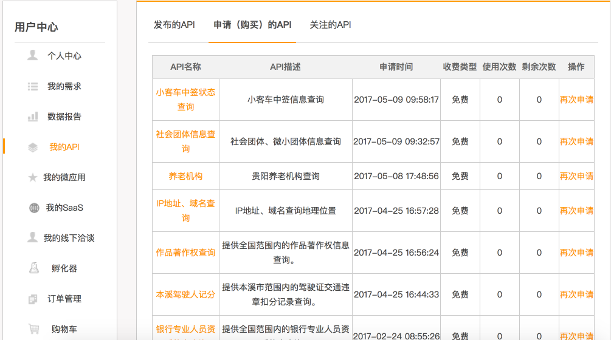

简介：API申请指的是平台API资源的申请及支付过程
(一)有固定申请次数的情况
1.点击详细页面申请功能
2.收费套餐：选择套餐、输入申请套餐数，接受服务协议
3.免费套餐：接受服务协议
4.收费套餐：如果只有一项资源可以点击立即支付完成申请
5.收费套餐：如果支付过程中出现异常或者报错，用户可以在用户中心购物车中继续完成支付
6.收费套餐：如果要选择多项资源可以加入购物车后统一支付完成申请
(二)没有固定申请次数的情况
如果想对某项资源进行深度合作，可以点击线下洽谈申请，会有工作人员第一时间和您取得联系
(一) 协议
所有接口调用均采用HTTP远程调用方式，客户端调用并同步返回响应。
数据格式： json
(二) 请求
1.请求方式：get/post， 服务地址url格式为
http://domain/[datasource]/[service]/[servicename]
其中:
domain为服务域名
datasource为数据来源
service为服务名称
servicename 为API名称
2.协议消息头包含以下属性:
Content-Type：application/json;charset=utf-8;
3.请求header包含以下参数:
apikey: 用户申请的apikey
sign: 数据签名，由apikey、secretkey及请求参数经过特定算法生成(参考2.2)
(三) 响应
1.响应报文媒体类型为application/json;charset=utf-8
1.1鉴权信息
| apikey | 用户登录平台，申请使用API生成，可在用户个人中心查看，或者直接由平台管理员提供 |
| secretkey | 用户登录平台，申请使用API生成，可在用户个人中心查看，或者直接由平台管理员提供 |
| sign | 使用apikey,secretkey以及请求参数生成的数字签名 |
| 生成签名算法 |
GET请求
1.将请求参数按照参数名进行排序 2.构造拼接被签名参数串，参数和参数之间用“&”号连接 3.计算签名 3.1 将appkey和参数串拼接并进行base64编码 3.2 生成MD5摘要 3.3 用secretKey将MD5摘要进行3DES加密 POST请求1.将请求参数构造成json字符串 2.计算签名（同上） 计算签名示例代码： public static String signRequest(String apikey,String srcText,String secretkey)throws Exception{
// 对报文进行BASE64编码，避免中文处理问题
String base64Text = new String(Base64.encodeBase64((apikey + srcText).getBytes("utf-8"), false));
// MD5摘要，生成固定长度字符串用于加密
String destText = MD5Util.md5Digest(base64Text);
AlgorithmData data = new AlgorithmData();
data.setDataMing(destText);
data.setKey(secretkey);
// 3DES加密
Algorithm3DES.encryptMode(data);
return data.getDataMi();
}
|
用户可以通过用户中心-我的API-申请(购买)的API查看API使用次数与API剩余次数
